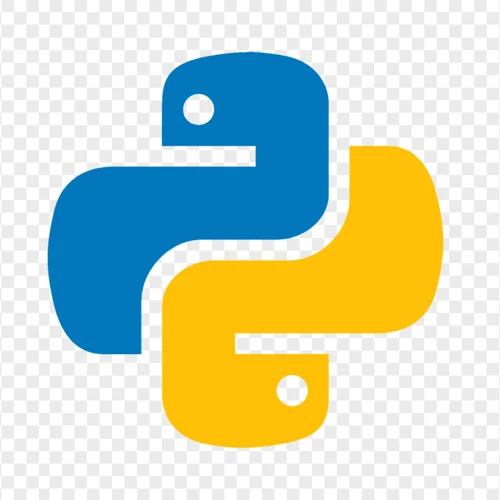

Application Logicielle (GUI)
ClassRoom (Salles)
Ce projet est une application de bureau développée en Python utilisant la bibliothèque Tkinter. Elle permet de gérer la réservation de salles de classe pour les élèves. L'outil vérifie en temps réel la disponibilité et les chevauchements d'horaires, propose des salles alternatives, et intègre un système complet de pénalités et de statistiques, le tout sauvegardé au format JSON et structuré avec la Programmation Orientée Objet (POO).
Technologies utilisées
Python
Tkinter (Interface graphique)
POO (Objet)
Fichiers JSON
Points techniques
- Trois classes :
Salle,EleveetReservation, chacune avec ses règles (chevauchement d'horaires, droit de réserver, blocage). - Règles de réservation : dix salles, du lundi au vendredi, de 8 h à 18 h. Si la salle est prise, l'application propose les salles libres sur le même créneau.
- Pénalités : cinq points par heure de retard, et un élève qui atteint 50 points ne peut plus réserver.
- Suivi : historique des actions, statistiques d'occupation et sauvegarde de toutes les données dans un fichier JSON.
- Code découpé : les classes, les fonctions métier, la configuration et l'interface Tkinter sont dans quatre fichiers distincts, avec une série de tests lançable depuis l'interface.
Aperçu du code source
Fichiers gérant l'interface graphique et la logique des données (classes/fonctions) :
Visuels
